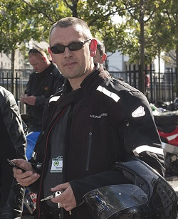

My name is Declan McGuire and I am, among many other things, a life long motorcyclist.
That is to say I've been riding motorcycles in one form or another for my entire adult life. Aside from riding bikes, I occasionally write about them for various blogs, forums and magazines. If you're under 25 feel free to ask an older person what a magazine is.
As you might have guessed this site is my attempt at explaining all that is good about motorcycling, or biking if you're so inclined. In the highly unlikely event you're wondering what I look like, that's me in the picture on the right.
For some people, the best aspect of motorcycling is the freedom it brings to the individual.
That's harder to explain than you might think - but trust me on this - it's something everyone should experience at some point in their lives. For others, it's the people you meet along the way, and once again you'll have to take me at my word here, you'll meet & befriend people from all walks of life.
As mentioned above, I have been known to write for various publications over the years. I've even been fortunate enough to get paid for doing so at times.
Yes, being a motorcycle journalist and getting free use of the latest exotic machinery at somebody else's expense sounds exciting. The downside is you'll get evicted for not having enough disposable income to pay your rent/mortgage, and then you'll starve because you can't afford to eat either.
I'm not a fan of being homeless (or hungry) so I have a real job instead.